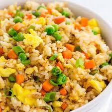

friedrice Recipes

How to make friedrice
Fried rice is a dish of cooked rice that has been stir-fried in a wok or a frying pan and is usually mixed with other ingredients such as eggs, vegetables, seafood, or meat. It is often eaten by itself or as an accompaniment to another dish.
Ingredients
- peas
- sesame oil
- pepper
- rice
- soy sauce
- corn
- eggs
Steps
- In a wok or deep skillet, heat up the oil over high heat and cook carrots, onions, and garlic until onions are translucent.
- Add bell peppers and broccoli and cook an additional 3-4 minutes. Push all of the cooked vegetables to the side of the pan.
- Beat the eggs and pour into the cleared half of the pan. Scramble the eggs and mix with the rest of the vegetables.
- Add peas, corn, rice, soy sauce, sesame oil, and pepper. Mix well and let the rice cook until slightly crispy.
- Enjoy!